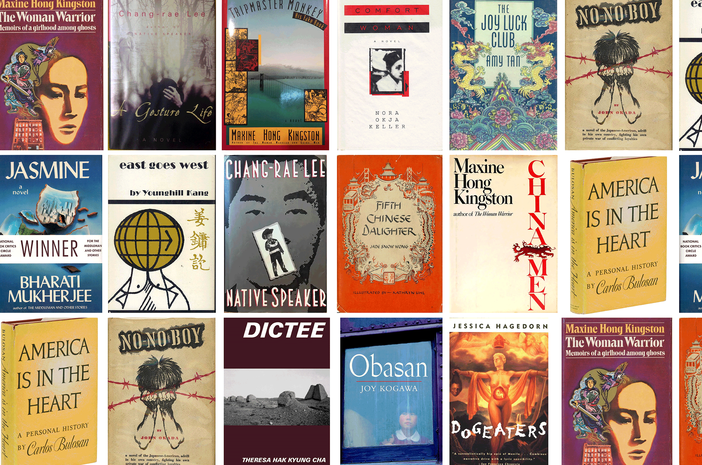

import {viewof dataSummaryView, Tabulator, viewof selectedColumns, viewof dataSet, tableContainer, fetchData, generateTabulatorTableFromCSV, progress, progressbar} from "8bb63a6cde9addff"The Canon of Asian American Literature
asian american
literature
canon
fiction
dataset
Abstract
This dataset traces the Asian American literary canon through nearly 1,900 scholarly citations from 1971 to 2023, capturing which authors and texts have shaped the field over time.
Principal Investigator: Long Le-Khac
Research Assistants: Kate Hao, Taylor Huie

Data Table
Download Table Data (including filtered options)
Creative Commons License
This work is licensed under CC BY 4.0

Explore the Asian American Literary Canon
Significance and Context
In recent decades, the body of Asian American literature has grown dramatically.1 Scholarship on Asian American literature has also accelerated to catch up to this explosion of literary production (Lim et al.). Meanwhile, Asian American writers have entered the centers of American letters, winning numerous awards and climbing bestseller lists (Song). Given this prominence, no large-scale studies of contemporary American literature are complete without data on Asian American literature. Such studies, however, are hampered by the lack of expansive bibliographies and metadata that would allow scholars to identify and grasp the scope of Asian American literature. Older bibliographies of Asian American literature exist (Hiura and Sumida, Cheung and Yogi, Wong and Sumida), but they do not reflect the 21st-century explosion of literary production. The most recent bibliography (Xu) is larger but, as a print document, does not readily allow scholars to gather data for large-scale study. There’s a need for curated, accessible, and actionable metadata about the texts and authors comprising the growing body of Asian American literature.
This dataset addresses that need. Representing the canon that scholars of Asian American literature have built, it is the most expansive dataset to date on Asian American literature.2 It allows scholars to identify nearly 800 authors and nearly 1,000 texts that are part of the Asian American literary corpus and to bring into their analyses extensive bibliographic, biographical, and demographic information. The data is formatted so that scholars can search, sort, mine, analyze, and operationalize the data in ways not possible with print or proprietary digital bibliographies.
The dataset captures nearly 1,900 instances in which a primary text has been studied as an Asian American work. The dataset allows for tracking the scholarly attention of Asian American literary studies over time and examining the kinds of texts and authors the field has emphasized, making possible meta-critical study of how scholars of Asian American literature have constructed their object of inquiry. With this data, we can ask, how have the definitions, boundaries, and internal structures of this corpus transformed over time? How to define Asian American literature, where to draw its boundaries, and which groups have been included or excluded have long been central debates in the field (Koshy, Lowe, Chuh). These debates have often been theoretical. This dataset offers the chance to ground these debates in empirical examinations of the concrete corpus-building practices of scholars. On one important level, Asian American literature is the body of texts that have been discussed as Asian American by the hundreds of scholars who have helped institutionalize the idea of this literature. Publication by publication, scholars in Asian American studies have made choices about which works deserve attention as Asian American literature. These choices have accreted over decades into a canon that has shaped the idea of Asian American literature and bears systemic inequities. This shaping demands scrutiny. This dataset allows for that scrutiny.
For scholars of Asian American literature, this dataset offers many possibilities. For example, they could mine the immigration data to examine how the transnational turn in Asian American studies and its responses to mass immigration made the Asian American canon more transnational and immigrant-centered. They could mine the geographic data to assess whether the field has expanded its attention beyond long-established ethnic communities in California and Hawai‘i. They can track how the genres centered by the field have shifted over time. Members of the research team have used this dataset to examine inequalities of period, ethnicity, and gender in the canon of Asian American literature (Le-Khac and Hao). These are just a few examples of the kinds of studies this dataset enables.
For scholars beyond Asian American studies who are interested in canon formation, this dataset offers a particularly interesting case, because the formation of Asian American literature as a self-conscious body of works is a recent development unfolding over the last 50 years. This dataset spans this time period, allowing scholars to track the full development of a canon from a nascent formation to a mature body that has become large and established enough to generate its own internal pressures and inequalities.
This dataset contributes to a growing body of datasets that examine contemporary U.S. literature and identify corpora from minority communities. It integrates bestseller data compiled by Jordan Pruett and major prize data gathered by Claire Grossman, Juliana Spahr, and Stephanie Young while expanding beyond bestselling works and major award winners to include hundreds of other Asian American texts and a range of bibliographic, demographic, and biographical information not included in those datasets. This allows for comparative study between the popular and obscure, the recognized and unrecognized. The dataset also complements projects such as The Black Book Interactive Project and the Recovering the US Hispanic Literary Heritage Digital Collections by offering data on Asian American literature. In conversation with these datasets, it allows a more comprehensive view of U.S. literary diversity.
For the computational study of contemporary U.S. literature, this dataset expands the possibilities of inquiry. How scholarly attention interacts with popular and critical recognition is one important line of research (Manshel, McGrath, and Porter). This dataset advances such work by offering data on scholarly attention to Asian American literature. It also contributes publishing data on nearly 1,000 Asian American texts, enabling scholars building on the work of Dan Sinykin and Edwin Roland to examine how writers of color navigate the transforming publishing landscape. Another key line of research analyzes racial inequalities in contemporary U.S. literature. Richard Jean So reveals how enduring these inequalities are and calls for projects recovering minority literatures. Grossman, Spahr, and Young show that nonwhite writers are increasingly winning prizes but need elite credentialing to do so. While these studies illuminate interracial disparities, our dataset helps expand this study to the scale of intra-racial inequalities. As scholars combat interracial inequalities to recover minority literatures, they can produce intra-racial inequalities within the minority canons they shape. And as the centers of U.S. literature include elite forms of diversity, they exacerbate inequalities between elite and non-elite minority writers. To scrutinize these developments, we need data that enables intra-minority, intersectional comparisons alongside minority-majority comparisons. This dataset allows for an examination of how factors like gender, ethnic subgroup, nativity, education, and publisher intersect with race to influence the careers of elite and non-elite Asian American writers. By offering data for within-group comparisons, this dataset helps enable a fuller understanding of the multi-scaled inequalities structuring U.S. literature.
Collection and Curation
This data was collected over nine years by the principal investigator and paid student research assistants. The data collection was funded in part by a Regents Junior Faculty Fellowship from the University of California, Berkeley.
This dataset builds upon data from the Modern Language Association’s (MLA) international bibliography. We aimed to collect the set of scholarship on Asian American literature and the primary texts studied in that scholarship, effectively which texts scholars have framed as Asian American. We included all scholarly publications indexed in the bibliography with “Asian American” or “Asian America” in their title or abstract.3 We also included all the works of literary scholarship published in two leading journals in the field, Amerasia Journal and The Journal of Asian American Studies.4 Such pieces, we concluded, signal their engagement with Asian American literature through their choice of publication venue. The dataset encompasses nearly 750 scholarly publications (articles, books, book chapters, and dissertations) from the field’s beginnings through 2023.5 We wrote a script to scrape the MLA bibliography for the titles of primary texts studied in each piece of scholarship. We supplemented this data by manually recording the primary texts studied in the monographs found through the bibliography search.6 For each instance of study of a primary text, we recorded the scholarly publication’s title, author(s), publication year, and publication venue. For instances indexed in the bibliography, this collection was done by our script. For instances found manually in monographs, we did this recording manually.
Next, we collected metadata on each primary text and its author(s). For each text, we collected the title, publication year, author(s), genre, publisher, New York Times bestseller status, and awards won. On authors, we recorded gender; ethnicity/national origin group; race; birth nation; birth year; immigrant generation and year of U.S. immigration (if applicable); nations, states, and cities of major residence; formal education level; highest degree earned and where they earned it; whether they earned an MFA; whether they taught in a university and which one(s); and awards they won. We gathered this information manually, drawing on hundreds of publicly available sources. There isn’t space here to cite them all. These are the kinds of sources we drew on most:
- Reference works on Asian American literature (Huang, Xu, Liu)
- The publication studying the text/author
- Scholarly works in Asian American literary studies
- Reference websites focused on Asian American communities, e.g. Densho Encyclopedia and Asian Heritage in Canada
- Online repositories for literature and author biographies such as The Poetry Foundation and Poets.org
- Book reviews
- Newspaper and magazine articles
- Published interviews
- Author biographies included on the websites of authors, events, awards, fellowships, publishers, foundations, museums, universities, and talent agencies
The resulting dataset is expansive. However, it is not a complete picture of Asian American literary studies and its patterns of attention. Comprehensively tracking scholarly attention in a field is difficult. This dataset is a useful proxy for the dynamics of scholarly attention in Asian American literary studies, but it is a proxy. It comes with several limitations. First, the MLA bibliography is not a complete record of literary scholarship.7 There are likely works of Asian American literary studies not indexed in the bibliography (or published in the two journals) that are not represented in this data. Despite its gaps, the MLA bibliography remains the largest record of literary studies and an important picture of the field since it’s a primary resource scholars use to survey existing scholarship.
Second, records in the bibliography do not always list the primary texts studied, or the list is incomplete.8 To address this issue, we manually examined monographs found in the bibliography to record the primary texts they discuss. It was impractical to do the same for every article and book chapter we identified. It’s likely that we missed some discussions of primary texts in articles and book chapters for which the bibliography has incomplete primary text data. We compared the metadata we collected from books in one group and metadata from articles and book chapters in another and found, in aggregate, no substantial difference between the kinds of primary texts and authors these two groups of publications discuss. Third, there are scholarly works that discuss literary texts as Asian American but are not captured here because they don’t use the term in their titles or abstracts. To catch all these instances would require searching the full texts of all existing literary scholarship for the term “Asian America(n).” No such comprehensive full-text access exists. While this dataset does not capture all scholarship discussing literature as Asian American, it focuses on the large and meaningful set of scholarly works that foreground their Asian American concerns by flagging the term in their titles and abstracts. These are scholarly works that make explicit and prominent claims to contributing to the understanding of Asian American literature.
One way we sought not to impose interpretations on this data is that we didn’t exclude texts or authors based on our own definitions of Asian American literature. Because one goal of the dataset is to track how scholars have defined this corpus, we didn’t want to build in our own definitions through the data collection process. This non-intervention is most visible in terms of racial identity and genre. One common definition of Asian American literature is literature written by U.S. authors of Asian descent. But this is just one possible definition. We didn’t exclude instances based on this or other definitions. As a result, there are non-Asian authors in this dataset. They appear because their primary texts were studied in a scholarly publication with an Asian American focus. Scholars have proposed other definitions of Asian American literature based on content, political orientation, and form rather than the racial identity of authors (Ho, Lye), so texts by non-Asian authors are part of the field (for example, Orientalist texts.) The dataset also includes instances of comparative study, for example, of Asian American and Jewish American literatures. In such studies, texts by Jewish writers are likely not framed as Asian American per se but as related to Asian American literature. We did not exclude non-Asian authors found in comparative studies, because adjudicating such cases would require careful reading in the text of the scholarly work, which could not be done across the nearly 750 scholarly sources we identified. Moreover, relational study across racial groups is a crucial area within Asian American literary studies, so scholars have proposed that the field’s object of study includes non-Asian authors whose work is related to Asian American literature. That not all the texts here fit an identity-based definition provides a chance for scholars to examine how identity-based definitions have jostled with definitions based on aesthetic, thematic, political, or historical affiliations. By not excluding instances based on authorial race, the dataset reflects the interplay of competing definitions of Asian American literature and allows for study of this interplay.
We took a similar approach with genre. While a common definition of literature includes genres like novels, poetry, and plays, Asian American literary studies encompasses other genres and media like graphic narrative, film, performance art, television, and social media. The field has an expansive definition of literature. To avoid imposing our own definitions of literature, we did not exclude instances based on genre.9
We tried to keep the data collection capacious and uncommitted to any one definition of Asian American literature. This allows the dataset to paint a fuller picture of the contested history of defining this literature. It also allows for more possible uses. Users with particular definitions in mind can use the metadata on race, genre, and more to filter the instances to the set of authors and texts they’re interested in.
Description
“The Canon of Asian American Literature” catalogs the instances of study from 1971 to 2023 of literary texts and authors in Asian American-focused scholarship indexed in the MLA Bibliography or appearing in Amerasia Journal and The Journal of Asian American Studies. The csv version allows users to run code on the data. For users exploring the data manually, a more legible Excel version is offered.
Each row in the file represents one instance of study of a primary text. If a primary text is not listed, that row represents an instance in which an author was studied without sustained attention to any particular text (e.g., an article on a poet where the analysis moves across many poems). There are nearly 1,900 rows of data. Going across, there are 6 columns of metadata describing the primary text, 19 columns describing the primary text author, and 5 columns describing the scholarly publication studying the text/author. To the far right are columns describing second, third, and fourth primary text authors if applicable. Here are descriptions of the metadata in each column.
title
Primary text title.
publication_year
Original publication year of the primary text. For a series across multiple years, a range is listed.
genre
The primary text’s form or medium. Values: “Novel,” “Poetry,” “Short Story(ies),” “Prose Nonfiction,” “Drama,” “Film,” “Television,” “Graphic Narrative,” “Anthology,” “Artist Book,” “Social Media,” “Video Game,” “Photography,” “Music,” “Textbook.” Individual short stories and story collections are listed as “Short Story(ies).” “Drama” includes theater and performance art. For multigenre texts, values are combined with slashes, e.g., “Poetry/Short Story(ies).”
publisher
The original publisher of the primary text. For short stories and serialized novels, the periodical is listed; for a short story in a collection, the publisher of the collection; for drama, the theater where the work premiered; for television series, the network; for films, the distribution company.
text_awards
Up to three awards won by the primary text, emphasizing the most prestigious awards. “And more” indicates further awards not listed. Blank indicates no awards won as far as we could determine.
nyt_bestseller
“Y” indicates a New York Times Hardcover Fiction Bestseller (1931–2020), following Pruett’s dataset. “N” if not. “N/A” if not fiction or not published from 1931–2020.
author_name
The name of the author of the primary text. When a professional name is more widely used than a real name, it is listed.
birth_year
Author’s birth year.
gender
Author’s gender. Wherever possible, this is based on self-identification in biographical materials or interviews. When that was unavailable, values are based on pronouns or identifications used by scholars/journalists, which could differ from how the author self-identifies. “F” for cisgender female; “M” for cisgender male; “TF” for transgender using she pronouns; “TM” for transgender using he pronouns; “MG” for mixed gender; “NB” for nonbinary. Transgender, mixed gender, and nonbinary values are only used when the author self-identifies as such.
ethnicity_national_origin_group
The author’s ethnic background or national origin group, based on self-identification in biographical materials or interviews. When that was unavailable, it’s based on identifications by scholars, journalists, and reference works. Usually, national origin group is listed. When information linked the author to a specific ethnic group within a multiethnic nation, the specific ethnicity is listed with the nation in parentheses, e.g., “Chinese (from Taiwan).” For White and Black authors, national origin group and ethnicity were frequently unknown; in such cases, the panethnic categories “Euro American” and “African American” are listed. Native American groups are listed without nation parentheses as they are national groups in themselves.
race
Author’s race, derived from the ethnicity_national_origin_group data. When ethnicity/national origin information was unavailable, race is based on self-identification in biographical materials or interviews or identifications by scholars, journalists, and reference works. The categories (and the ethnic/national origin groups belonging to each) align with the U.S. Census’s 2024 updated categories (Marks and Battle), with some differences: we use “Native American” for “American Indian or Alaska Native,” “Latinx” for “Hispanic or Latino,” “MENA” for “Middle Eastern or North African,” and “Pacific Islander” for “Native Hawaiian or Pacific Islander.” Because Jewish Americans are often racialized in ways distinct from non-Jewish White Americans, we include “Jewish” as a racial category. We also treat Latinx as a racialized panethnic category not an ethnicity. Multiracial authors are listed as multiracial followed by multiple categories, e.g., “Multiracial Asian-White.”
birth_nation
Author’s birth nation, reflecting the name and colonial status at the time of birth, e.g., “Philippines (United States territory).” The present-day name is in parentheses if significantly different. Colonized territories that are not incorporated into the colonizing nation are listed as themselves with parentheses noting the controlling nation, e.g., “Guam (United States territory).”
native_foreign
Native indicates U.S. born. Foreign indicates foreign-born immigrant to the U.S. This column follows largely from the birth_nation column. “N/A” if irrelevant, e.g., Asian-Canadian authors or authors in Asia.
immigrant_generation
The immigrant generation of authors in the U.S. “1” indicates immigration to the U.S. at age 13 or above, “1.5” indicates immigration at age 12 or below, “2” indicates at least one immigrant parent, etc. “N/A” is for Native Americans and for those who have no personal or family history of immigration to the U.S.
immigration_year
Year of U.S. immigration. “N/A” if not applicable.
nations
Nations in which the author has lived. The residence columns—nations, states, cities—focus on residence in the range of years.
states
U.S. states where the author has lived.
cities
Cities where the author has lived.
education_level
The author’s formal education level. Values: “No High School,” “Some High School,” “High School,” “Some Undergraduate,” “Undergraduate,” “Some Graduate,” and “Graduate.”
degree
The highest degree earned by the author.
mfa
Whether the author earned a Master of Fine Arts degree (in any medium).
degree_institution
The institution(s) granting the author’s highest degree(s).
university_teacher
Whether the author has held a position as instructor or faculty at a college or university.
teaching_institution
Up to three institutions where the author has been a college/university instructor or faculty. “And more” indicates further institutions not listed.
author_awards
Up to three awards won by the author, emphasizing the most prestigious awards. “And more” indicates further awards not listed. This column does not repeat awards already listed in the text_awards column. Blank indicates no awards won as far as we could determine.
scholarship_title
Title of the scholarly publication studying the primary text/author.
scholar_name
Name of the author(s) of the scholarly publication.
scholarship_year
Publication year of the scholarly work.
scholarship_venue
For publications that aren’t books, this lists where the piece appeared: journal for articles, edited volume for book chapters, dissertation database for dissertations.
mla_doi
MLA Bibliography accession number for the scholarly publication. Searching the bibliography for this number will bring up the record. For pieces not indexed in the bibliography, a DOI is listed.
2_author_name, 2_birth_year, etc.
Fields for additional authors of the primary text, mirroring the primary author columns. The leading number indicates the ordinal position of the author, e.g., 2_birth_year indicates the second author’s birth year. If these fields are blank, the primary text does not have additional authors.
In each metadata column, there are authors and texts for whom we could not find information. Unless otherwise specified in the descriptions above, blanks indicate no information found.
Ethical Considerations
All this data comes from publicly available sources. The dataset does not contain confidential information. Nevertheless, information about gender, race, ethnicity/national origin group, and year of birth can be sensitive. Because the data on these fields includes information reported by scholars, journalists, and reference works, the information for an individual author may have errors or disagree with how the author would identify themselves. Moreover, because gender, race, and ethnic identities are not stable categories but socially and historically contingent, contextual, and constructed categories, the gender, race, or ethnic data on any individual here cannot be considered definitive. This data is collected because inequities of gender, race, and ethnicity have been central topics of debate within Asian American literary studies, but these debates have unfolded without empirical data to ground them or to measure the extent of the inequities. The data here addresses this lack; it is intended for the study of aggregate patterns and inequalities within the canon of Asian American literature.
Versioning
The principal investigator plans to work with research assistants and collaborators to update the dataset every five years to add new instances of study of primary texts and authors. The goal is for the dataset to be a site for tracking the ongoing development of the Asian American canon and for unearthing inequities for the field to debate and address. We welcome any collaborators interested in contributing to this effort. Please contact le-khac@berkeley.edu to propose collaborations, report errors, or contribute missing information.
Bibliography
Arte Público Press. “Recovering the US Hispanic Literary Heritage Digital Collections.” https://usldhrecovery.uh.edu/.
Cheung, King-Kok, and Stan Yogi. Asian American Literature: An Annotated Bibliography. Modern Language Association of America, 1988.
Chuh, Kandice. Imagine Otherwise: On Asian Americanist Critique. Duke University Press, 2003.
Grossman, Claire, Juliana Spahr, and Stephanie Young. “The Index of Major Literary Prizes in the US.” Edited by Dan Sinykin and Melanie Walsh. Post45 Data Collective, 2022. https://doi.org/
-—-. “Literature’s Vexed Democratization.” American Literary History 33, no. 2 (2021): 298–319.
“Black Book Interactive Project,” Illinois Open Publishing Network, https://iopn.library.illinois.edu/
Grazevich, Greg, interview by the author, June 13, 2025.
Hiura, Arnold T., and Stephen H. Sumida. Asian American Literature of Hawaii: An Annotated Bibliography. Hawaii Ethnic Resources Center, Talk Story, 1979.
Ho, Jennifer Ann. Racial Ambiguity in Asian American Culture. Rutgers University Press, 2015.
Huang, Guiyou. The Columbia Guide to Asian American Literature since 1945. Columbia University Press, 2006.
Koshy, Susan. “The Fiction of Asian American Literature.” Yale Journal of Criticism 9, no. 2 (1996): 315–46.
Le-Khac, Long and Kate Hao. “The Asian American Literature We’ve Constructed.” Post45 no.7 / Journal of Cultural Analytics no. 4 (2021): 146-179.
Lim, Shirley Geok-lin, John Blair Gamber, Stephen Hong Sohn, and Gina Valentino. “Introduction.” In Transnational Asian American Literature: Sites and Transits, 1–26. Temple University Press, 2006.
Liu, Miles Xian. Asian American Playwrights: A Bio-Bibliographical Critical Sourcebook. Greenwood Press, 2002.
Lowe, Lisa. Immigrant Acts: On Asian American Cultural Politics. Duke University Press, 1996.
Lye, Colleen. “Racial Form.” Representations 104 (2008): 92–101.
Manshel, Alexander, Laura B. McGrath, and J.D. Porter, “Who Cares about Literary Prizes?” Public Books, September 3, 2019, https://www.publicbooks.org/who-cares-about-literary-prizes/.
Marks, Rachel, and Karen Battle. “What Updates to OMB’s Race/Ethnicity Standards Mean for the Census Bureau.” United States Census Bureau (blog), April 8, 2024. https://www.census.gov/
Modern Language Association. “About the MLA International Bibliography.” Accessed June 17, 2025. https://www.mla.org/Publications/MLA-International-Bibliography/About-the-MLA-International-Bibliography.
Niiya, Brian, ed. Densho Encyclopedia. https://encyclopedia.densho.org/.
Pruett, Jordan. “New York Times Hardcover Fiction Bestsellers (1931-2020).” Edited by Dan Sinykin and Melanie Walsh. Post45 Data Collective, 2022. https://doi.org/
“Asian Heritage in Canada.” Toronto Metropolitan University Libraries. https://library.torontomu.ca/asianheritage/.
Sinykin, Dan and Edwin Roland, “Against Conglomeration,” Journal of Cultural Analytics 6, no. 2 (2021): 72–107.
So, Richard Jean. Redlining Culture: A Data History of Racial Inequality and Postwar Fiction. Columbia University Press, 2021.
Song, Min Hyoung. The Children of 1965: On Writing, and Not Writing, as an Asian American. Duke University Press, 2013.
Sumida, Stephen H. “Asian/Pacific American Literature in the Classroom,” American Literature 65, no. 2 (1993): 348–53.
Wong, Sau-ling Cynthia, and Stephen H. Sumida, eds. A Resource Guide to Asian American Literature. Modern Language Association of America, 2001.
Xu, Wenying. Historical Dictionary of Asian American Literature and Theater. Second edition. Rowman & Littlefield, 2022.
Footnotes
In the 1970s, Stephen Sumida recalls, “we could carry all Asian American texts in print to class with one hand” (352). In comparison, this dataset shows nearly 350 unique texts published in the 21st century, and those are just the texts studied by scholars. Since the 1990s, Asian American writers have published at “an unprecedented rate” (Song 10).↩︎
This dataset is not a comprehensive bibliography of all published Asian American literature. It represents works that scholars have specifically framed as “Asian American.” This includes texts predating the term that scholars have retroactively incorporated into the canon. It excludes texts that scholars have exclusively categorized under broader categories, e.g. “Third World literature,” or narrower ethnic-specific labels, e.g. “Chinese American.” A comprehensive bibliography is out of reach. Gathering race data on every published author in the U.S. is impractical. Moreover, the nature of “Asian American literature”—a constructed, unstable, panethnic category with continually debated definitions—complicates any comprehensive bibliography built on a stable definition. Instead of imposing a singular definition, grasping this literature requires tracking how significant publics have actively built, defined, and debated it. In this dataset, that public is scholars of Asian American literature.↩︎
This search also captured uses of “Asian Pacific American” and “Asian Pacific Islander American.” We did not include publications referencing an Asian American subgroup in its title/abstract but not the term “Asian America(n),” because the tensions between specific ethnic literatures and the panethnic category of Asian American literature is one of the central debates in the field. Which ethnic group literatures are included in the category and which are marginalized is a key question that this dataset addresses.↩︎
We defined “literary scholarship” as any article that substantially discusses a literary text, i.e., at least several pages of analysis, even if the article is not primarily situated in literary studies.↩︎
We focused on original scholarship on literary works so did not include review articles. We did not count literary works published in journals or literary anthologies as instances of scholarly attention, because our initial studies suggested that the literature published in journals and anthologies is not the same as what scholars devote attention to in their criticism. If a scholarly work about a primary text(s) was republished in another venue (articles republished in books, dissertations revised into books), we counted both instances. We see this as the discussion of the text(s) receiving multiple instances of visibility.↩︎
We focused on texts to which scholarly works devoted at least several pages of analysis.↩︎
For projects relying on the MLA Bibliography, understanding how it’s constructed and what’s included is important. We interviewed Editor-in-chief Greg Grazevich to learn more. The bibliography has records on over 3 million scholarly publications but isn’t comprehensive. Books are included via metadata submissions by publishers and staff review of publisher websites. Omissions can occur in staff reviews, if the book is published by a press beyond the hundreds the staff regularly reviews, or if presses don’t provide data. Usually, indexing also depends on staff having full text access to books. Many but not all presses offer the staff such access (Grazevich). The staff excludes books that don’t fit the bibliography’s subject areas: literature, literary theory and criticism, drama, folklore, linguistics, rhetoric and composition, print history, and related university-level teaching (Modern Language Association). Publications that engage substantially with literary texts are included, even if not primarily literary scholarship, but those that merely mention literary texts are not. The intake process and patterns of omission for articles is similar. Finally, there’s been a significant increase in coverage: the number of publications indexed annually doubled from 35,000 in the 1990s to 70,000 today (Grazevich). So their coverage of publications from the 1990s and before may be less expansive, potentially explaining the absence of some older publications in Asian American literary studies.↩︎
Incomplete lists can result from a technical limitation: the bibliography’s database has the capacity to tag up to five authors studied in a publication (Grazevich).↩︎
Identifying literary scholarship in the two interdisciplinary journals required a definition of literary texts. For consistency, we followed the expansive range of genres studied in the publications we found in the MLA Bibliography.↩︎
Citation
BibTeX citation:
@article{le-khac2025,
author = {Le-Khac, Long},
editor = {Manshel, Alexander and Porter, J.D. and Walsh, Melanie},
title = {The {Canon} of {Asian} {American} {Literature}},
journal = {Post45 Data Collective},
date = {2025-08-13},
url = {https://data.post45.org/posts/asian-american-literature/},
doi = {10.18737/092211},
langid = {en},
abstract = {This dataset traces the Asian American literary canon
through nearly 1,900 scholarly citations from 1971 to 2023,
capturing which authors and texts have shaped the field over time.}
}
For attribution, please cite this work as:
Le-Khac, Long. 2025. “The Canon of Asian American
Literature.” Edited by Alexander Manshel, J.D. Porter, and
Melanie Walsh. Post45 Data Collective, August. https://doi.org/10.18737/092211.